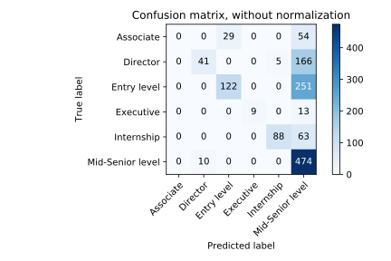
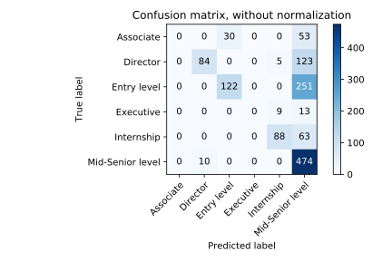
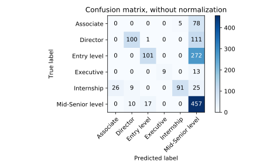

The figures made the mistakes visible
The poster preserves three model comparisons: logistic regression, Naive Bayes, and random forests. Each confusion matrix shows the advertised label on a row and the predicted label on a column. The diagonal contains the correct predictions; the other cells show where the descriptions were assigned another level.
All three matrices contain 1,325 evaluated rows, with class totals matching the labelled rows in demodata.csv. I have kept the original SVG figures and calculated the summary below directly from their cells. No classifier was retrained to produce these numbers.
| Saved figure | Correct / evaluated | Accuracy | Mean class recall |
|---|---|---|---|
| Logistic regression | 734 / 1325 | 55.40% | 41.53% |
| Naive Bayes | 768 / 1325 | 57.96% | 38.09% |
| Random forest | 758 / 1325 | 57.21% | 44.97% |
Download the calculated matrix summary. These figures are historical outputs; the archive does not pin every figure to a complete set of fitted parameters.
Three approaches, different error patterns






Naive Bayes has the highest aggregate accuracy in these saved comparisons, while the forest has the highest mean class recall. That difference matters: the measures reward different aspects of the predictions. The later code’s complexity does not by itself choose the strongest model for every question.
The majority class is Mid-Senior level: 484 of the 1,325 labelled evaluation rows. Always predicting that class would give 36.53% accuracy. The saved models exceed that baseline, but their results vary sharply by level.
What the overall score hides
| Advertised level | Evaluation rows | Logistic recall | Naive Bayes recall | Forest recall |
|---|---|---|---|---|
| Associate | 83 | 0.0% | 0.0% | 0.0% |
| Director | 212 | 19.3% | 39.6% | 47.2% |
| Entry level | 373 | 32.7% | 32.7% | 27.1% |
| Executive | 22 | 40.9% | 0.0% | 40.9% |
| Internship | 151 | 58.3% | 58.3% | 60.3% |
| Mid-Senior level | 484 | 97.9% | 97.9% | 94.4% |
None of the three saved matrices correctly identifies an Associate example. Mid-Senior level recall is above 94% for all three. Entry level descriptions often move into Mid-Senior level, and Executive performance also varies between models.
That is why I would read the confusion matrix and class-level report alongside accuracy. A model can recover much of the largest class while leaving another class almost unusable. Macro recall gives each level the same weight, making that imbalance visible.
Returning to the examples behind the scores
The dataset review changes how I interpret the historical results. There are 4,573 labelled training rows but 183 distinct exact descriptions. The separate evaluation file has 1,325 labelled rows but 87 distinct descriptions; ten description strings occur in both training and evaluation.
Repeated rows give some wording many more appearances. If copies cross a random split, the held-back rows may contain text already seen during training. Moving word extraction into cross-validation improves how the learning procedure is evaluated, but does not resolve this data overlap.
The plotted results are therefore evidence of the original experiments on these archived rows. They do not establish performance on an independent collection of new advertisements. A new evaluation would first define unique or grouped examples, keep repeated text together, and then reserve a genuinely separate collection.
The labels themselves also remain the advertised categories. Reproducing those labels measures agreement with the postings; it does not establish an objective definition of seniority across employers.
What changed as I learned
The progression was from getting predictions to organising the whole learning procedure. I could inspect word features, compare classifiers, evaluate through several folds, search representation and model settings together, and finally connect the text transformations in a shared fitted pipeline.
The source still has rough edges: early vocabularies fitted outside cross-validation, independent label encoding, unused settings in a helper, and incomplete experiments. They are part of the record of a first project. The articles keep those distinctions visible while following the code that became the later shared workflow.
Looking back, the next improvement would begin with the dataset and evaluation groups. The code structure makes those choices easier to change and inspect. The original poster remains the snapshot of where the project reached; this series adds the explanation of how I got there.
The records behind this series
The articles were checked against the repository description ↗, the collection and modelling scripts, both available branches, and the commit history. The source revision is 6b4c1d22. The original poster PDF and model SVGs are unchanged copies; its training-flow and word-cloud images are labelled excerpts.
Dataset counts and matrix summaries were calculated from the archived files. They are not new training results. Code excerpts link back to their source; collection examples replace local paths, and the batch-combination example explicitly uses current pandas syntax.
Dataset audit · Saved matrix summary · Original poster PDF · Return to the beginning.
Based on the original project code and records. Historical results and retrospective checks are identified in the text. Personal file paths are omitted from examples.